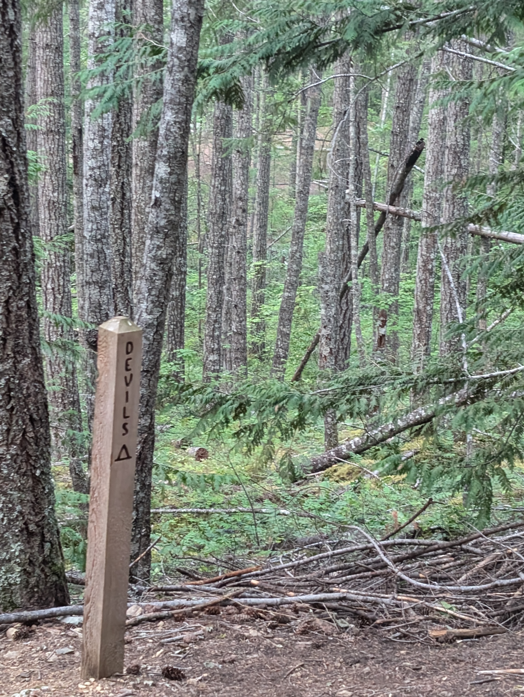
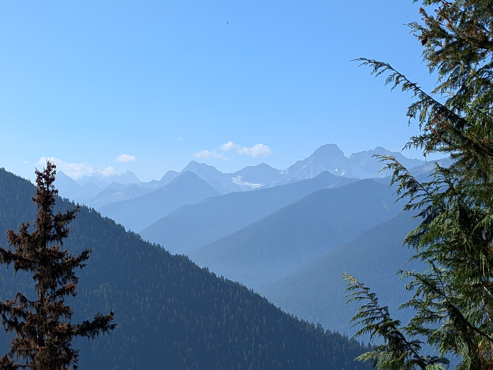

As a mountain endurance athlete, I’m no stranger to the concept of a challenge. My default setting is to always go a little further than I thought possible; whether its climbing higher or running further or surviving the wildest of wilderness. I always have lingering curiosity as to what lays out there. That’s how I constantly find myself in precarious situations such as butt-sliding down scree slopes, rationing water on mountain peaks or singing to bears; likely alone. For many people these are once-in-a-lifetime I-Almost-Died scenarios, I just call them Saturday adventures. Infact I’ve put myself through enough of these to know with reasonable certainity that I’ll make it out intact. Everything was in control and that was a problem.

I had been itching to do a success-not-guaranteed adventure, where I’d have to really dig deep. I found my answer in the Devils Dome Loop, a 40 mile loop with 10,000 ft of gain in the Northern Cascades of Washington. A burly loop twice as long as my usual outings; most people backpack it in multiple days but I didn’t give myself that option. I’d have to make it back to my car within the same calendar day whether I’d be limping or crawling.

It didn’t help that the conditions were far from ideal; it was smoky and my immunity was at its lowest due to my auto-immune disease. Moreover, given how slow I am, I would definitely be running in the dark, with wild and phantom friends, another fear I’d have to face head on. Of all the obstacles to my success, the biggest one was probably my own head. As much as I love to live in it, I don’t like where it goes when left to its own devices for a long time. I’ve run longer races but they pale in comparison because you are never entirely alone for a long stretch. This time I’d have to fill the roles of the captain, cheerleader, logistics manager and everything in between. Given my other commitments and wildfire uncertainities this was the only window I could pull it off. With all that in mind, I took the calculated risk to go for it.

As soon as I hit the ground running, all the hypotheticals disappeared. Distracted by the beautiful landscape, deers, eagles and backpackers, I mirrored everyone’s joy of simply being there. I lost track of time and mileage and before I knew it, I was at the Devils Dome at 7000ft above sea level. On the descent, I came upon mama and baby bear and wasn’t spooked at all. The sun was out, I was gallivanting in the woods, I couldn’t be happier.

It was all fun and games until it got dark, when the demons personas came out. One of them, lets call her Happy, is the reasonable one. She stands by facts and often has good judgement. She knows that by simply putting one foot infront of the other, all will be well. On the other hand, Happy’s evil twin, call her Sappy, is the complete opposite. She is very emotional, impulsive and not a good trail companion. She has already imagined all the ways things could go wrong: snakes, bears, hypothermia, unbearable fatigue, you name it. Their dialogue went something like:

Happy: Left foot, right root .. good progress! Sappy: Is that bigfoot? Happy: Its likely a tree. Sappy: But its moving … Happy: All the more reason to keep moving .. Sappy: Ok … Sappy: Remember that one time, you failed miserably? Happy: That’s irrelevant to today’s goal, no need to bring it up. Sappy: But what if history repeats itself? …
The arguments went on for what seemed like forever, partly entertaining, partly annoying. Eventually Happy won, I got back to the luxurious comfort of my small car and as fate would have it, it immediately started pouring.

I’m writing about this story because it tops all my adventures to-date. Big adventures come with big feels and inevitably big lessons.I felt empowered, defeated, euphoric, melancholic, smart, dumb and everything in between. I started something with high likelihood of failing and made it through. I learnt a lot about the practice of doing hard things: I was reminded of the importance of preparation, patience, resilience and more importantly; belief. Faith fills in the blanks left by uncertaininty of which there is no shortage when entering new territory. I had to believe that I had it in me to pull it off, that someone was rooting for me, that it would all work out in the end; and it did. It is true that challenges lead to breakthroughs but for that to happen you have to visualize before you see it, you have to believe. Change the narrative you tell yourself, and you might just write an epic story.